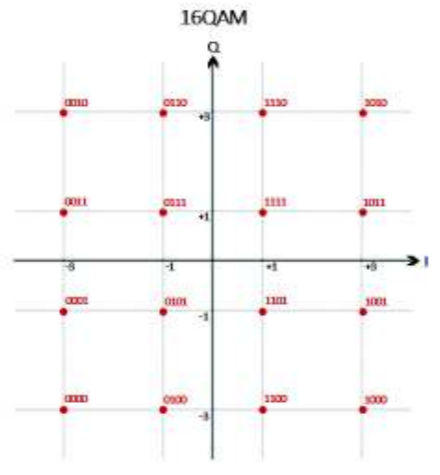

16-QAM demodulation
Performs the demodulation based on the 16-QAM scheme.
Contents
Syntax
IDATA = demodulate_16QAM(MDATA)
Description
The demodulate_16QAM(MDATA) function returns a set of demodulated bits based on the 16-QAM scheme.

Input Arguments
- MDATA
Frequency modulated 16-QAM symbols.
Output Arguments
- IDATA
Demodulated bits.
Examples
The function demodulate_16QAM(MDATA) is called.
function IDATA = demodulate_16QAM(MDATA)
Each bit combination is assigned according to what is specified in the standard constellation diagram. The horizontal hemisphere corresponds to the real part and the vertical hemisphere corresponds to the imaginary part.
IDATA = zeros(1,length(MDATA)*4);
for i=1:length(MDATA)
j = (i-1)*4 + 1; % IDATA index
if real(MDATA(i)) > 0 % Positive horizontal hemisphere
IDATA(j) = 1;
else % Negative horizontal hemisphere
IDATA(j) = 0;
end
if abs(real(MDATA(i))) < 2 % Closer to x = +-1
IDATA(j+1) = 1;
else % Closer to x = +-3
IDATA(j+1) = 0;
end
if imag(MDATA(i)) > 0 % Positive vertical hemisphere
IDATA(j+2) = 1;
else % Negative vertical hemisphere
IDATA(j+2) = 0;
end
if abs(imag(MDATA(i))) < 2 % Closer to y = +-1
IDATA(j+3) = 1;
else % Closer to y = +-3
IDATA(j+3) = 0;
end
end
end
See also